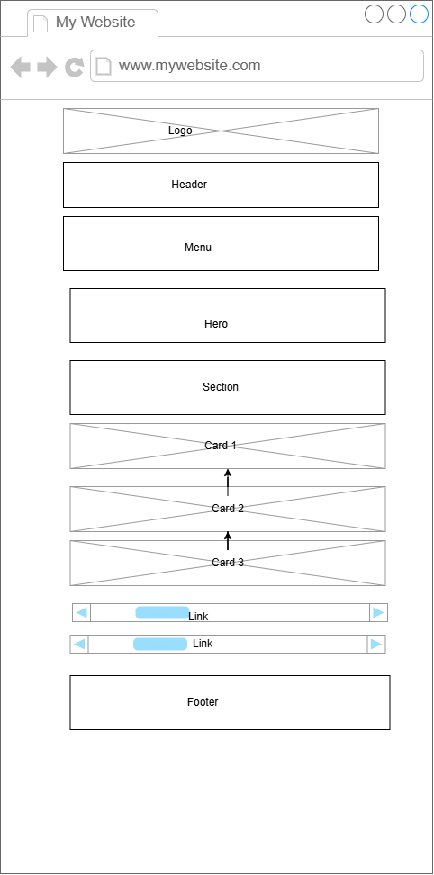
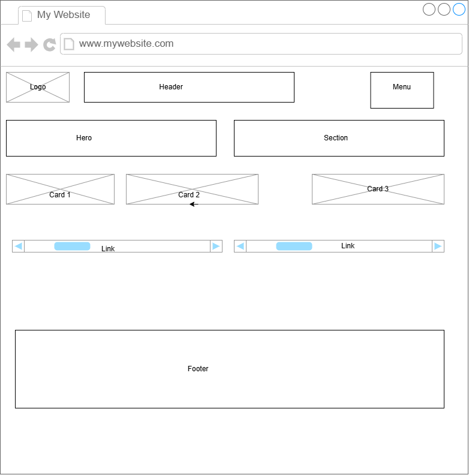

01 · Identity
Site name
ClearLedger is a proposed name for a practical small-business bookkeeping information site. “Clear” suggests understandable guidance, while “Ledger” connects the name to organized financial records. The name is short, easy to remember, and relevant to the site’s subject.
02 · Purpose
Site purpose
ClearLedger will help small-business owners understand how bookkeeping supports day-to-day decisions and long-term business health. The site will explain common bookkeeping services, share practical ways to organize financial records, and help visitors compare or contact a bookkeeping provider. Its content is educational and is not a substitute for individualized accounting or tax advice.
03 · Audience and pages
Intended visitors
The primary audience is owners of small businesses, sole proprietors, and people preparing to start a business who need clear, beginner-friendly information about bookkeeping.
Planned pages
- Bookkeeping Services: what routine bookkeeping includes, who may benefit, and what records a service may handle.
- Recordkeeping Tips: practical habits for organizing receipts, invoices, transactions, and monthly records.
- Choose a Bookkeeper: questions and criteria for comparing providers, plus a contact or inquiry form.
04 · Visitor questions
Scenarios
- What bookkeeping tasks should I do every week or month to keep my small business records organized?
- Which bookkeeping services should I compare before hiring a provider for my business?
- What financial documents should I prepare before contacting a bookkeeper?
05 · Visual direction
Color scheme
The palette is intended to feel calm, clear, and dependable. The same colors will be used on this site plan and the finished project.
-
Deep navy · #17324D
Headings, navigation, and strong text on light backgrounds. -
Teal · #176B67
Links, buttons, and small accent details. -
Warm cream · #F7F5EF
Main page background and open content areas. -
Muted gold · #E4B65A
Small highlights, labels, and decorative accents.
Body copy will use a dark ink color on the light background for readability. Gold will be used as an accent, not for small text on a light background.
06 · Type choices
Typography
- Manrope — headings, page titles, and important labels. Its sturdy shapes give headings a clear hierarchy.
- DM Sans — paragraphs, navigation, buttons, and form labels. It is designed to stay readable across screen sizes.
07 · Layout planning
Home page wireframes
The assignment requires original black-and-white sketches for the home page at mobile and desktop widths. Draw both sketches by hand, then photograph or scan them and add the images to this section. AI-generated wireframes are not permitted for this assignment.
Mobile sketch

Save your hand-drawn mobile sketch as
project/images/wireframe-mobile.png.
Desktop sketch

Save your hand-drawn desktop sketch as
project/images/wireframe-desktop.png.